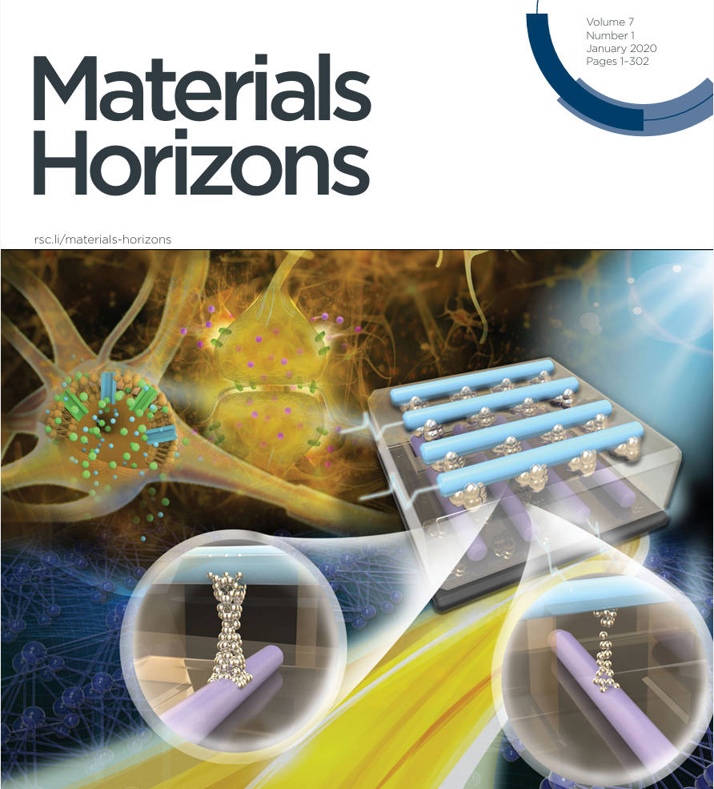

{kind=link}
ResearchMy research interests lie in neuromorphic computing, probabilistic computing, and quantum computing. The primary focus of my PhD work involves exploring materials science to develop hardware for neuromorphic computing applications. Specifically, I have conducted research on oxygen transport in memristive devices and the development of high-temperature electrochemical random-access memory. |
Selected Publications |
|
|
Thermodynamic Origin of Nonvolatility in Resistive Memory
Jingxian Li, Anirudh Appachar, Sabrina L. Peczonczyk, Elisa T. Harrison, Brianna Roest, Anton V. Ievlev, Ryan Hood, Sangmin Yoo, Kai Sun, A. Alec Talin, Wei D. Lu, Suhas Kumar, Wenhao Sun, Yiyang Li* Under Review, 2022 We reveal that the formation and stability of conductive filaments crucially depend on the stability of the amorphous oxygen-rich and oxygen-poor compounds, which undergo composition phase separation. |
|

|
Electrochemical and thermodynamic processes of metal nanoclusters enabled biorealistic synapses and leaky-integrate-and-fire neurons
Jingxian Li, Yuchao Yang*, Minghui Yin, Xinhao Sun, Lidong Li*, and Ru Huang* Mater. Horiz., 2020, 7, 71-81 Our study employs the electrochemical migration and thermodynamic relaxation of silver nanoclusters within dielectric materials to accurately mimic the dynamic processes of synapses and neurons in biological systems. |
|
|
Tuning analog resistive switching and plasticity in bilayer transition metal oxide based memristive synapses
Jingxian Li, Qingxi Duan, Teng Zhang, Minghui Yin, Xinhao Sun, Yimao Cai, Lidong Li*, Yuchao Yang*, and Ru Huang* RSC Adv., 2017, 7, 43132-43140 We report a systematic study on the analog switching of bilayer oxide based memristive synapses and show that transition metal oxides with rich intermediate phases, are able to provide larger number of conductance states compared with oxides with few intermediate phases. |
|
|
Design, synthesis and characterization of a new blue phosphorescent Ir complex
Chuang Yao†, Jingxian Li†, Jinshan Wang, Xinjun Xu*, Ronghua Liu, and Lidong Li* J. Mater. Chem. C, 2015, 3, 8675-8683 We synthesized a novel phosphorescent dye, Cz-C8-FIrpic, which effectively inhibits the phase aggregation of FIrpic units. Devices incorporating Cz-C8-FIrpic exhibited approximately a 15% enhancement in performance compared to the control devices reliant on FIrpic. |
Award |